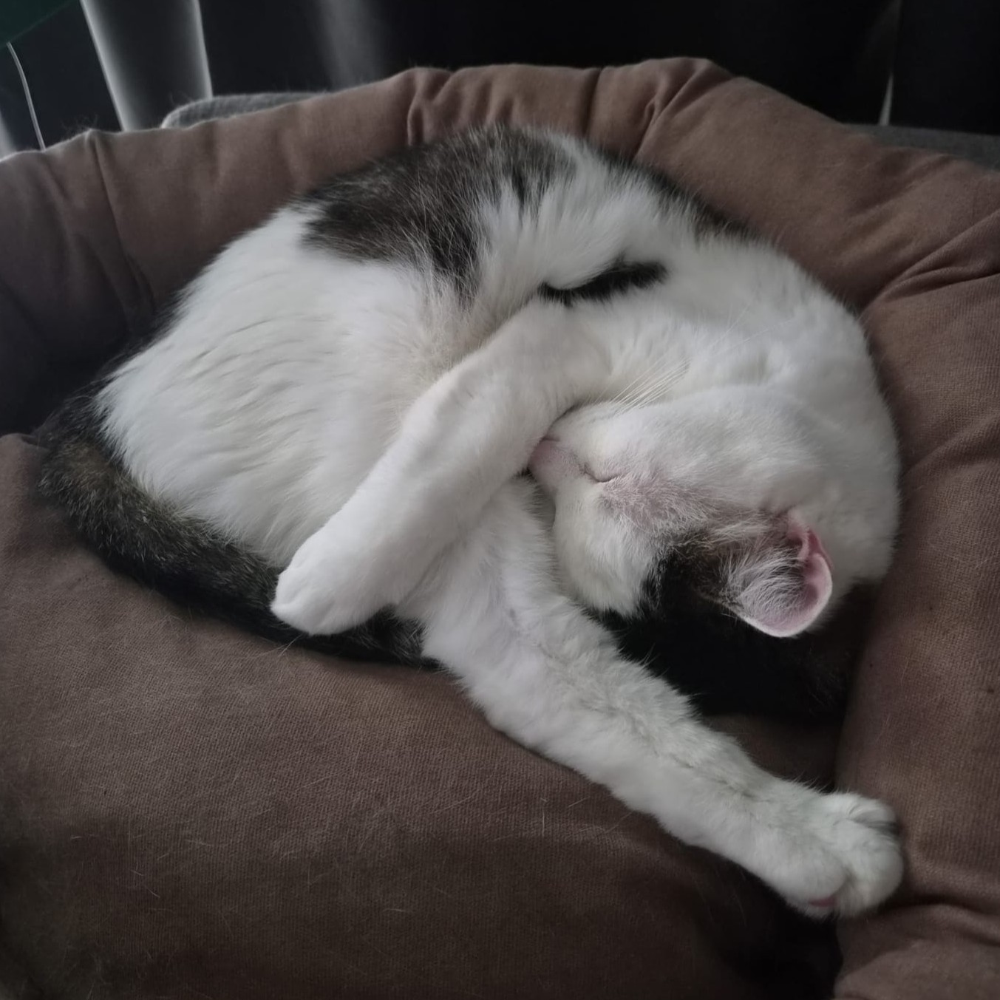

Miisu
At 16 years old, Miisu has mastered the art of finding the coziest spot in the house. Curled up in a soft bed, Miisu looks like a fluffy ball of warmth and comfort. Age has brought wisdom, but none of the charm that makes Miisu such a beloved companion has faded.